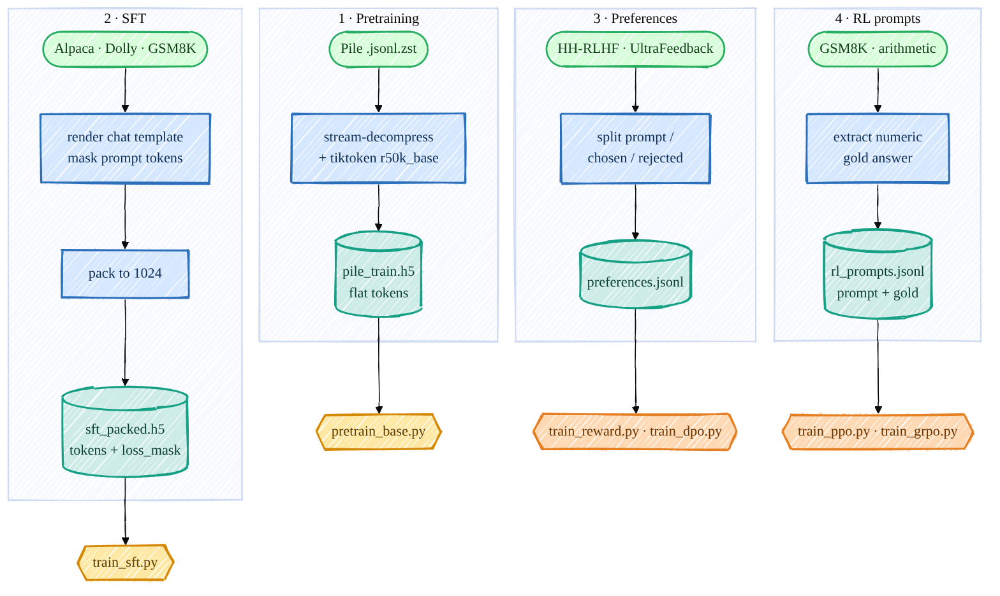

Data Handling & Preprocessing¶
Every stage needs data in a different shape, and getting these shapes right is honestly half the battle — a misaligned loss mask or a mis-parsed gold answer will silently wreck training. So before any model code, here is exactly how I download and preprocess each dataset, and the format each trainer expects.
There are four data pipelines, all feeding off real public datasets:

Mermaid source (live, editable)
flowchart TD
subgraph PT[" 1 · Pretraining "]
P1([Pile .jsonl.zst]):::data --> P2[stream-decompress<br/>+ tiktoken r50k_base]:::proc --> P3[(pile_train.h5<br/>flat tokens)]:::store
end
subgraph SF[" 2 · SFT "]
S1([Alpaca · Dolly · GSM8K]):::data --> S2[render chat template<br/>mask prompt tokens]:::proc --> S3[pack to 1024]:::proc --> S4[(sft_packed.h5<br/>tokens + loss_mask)]:::store
end
subgraph PF[" 3 · Preferences "]
F1([HH-RLHF · UltraFeedback]):::data --> F2[split prompt /<br/>chosen / rejected]:::proc --> F3[(preferences.jsonl)]:::store
end
subgraph RL[" 4 · RL prompts "]
R1([GSM8K · arithmetic]):::data --> R2[extract numeric<br/>gold answer]:::proc --> R3[(rl_prompts.jsonl<br/>prompt + gold)]:::store
end
P3 --> M1{{pretrain_base.py}}:::model
S4 --> M2{{train_sft.py}}:::model
F3 --> M3{{train_reward.py · train_dpo.py}}:::rl
R3 --> M4{{train_ppo.py · train_grpo.py}}:::rl
classDef data fill:#d6ffd9,stroke:#27ae60,stroke-width:2px,color:#143d1a;
classDef proc fill:#d6e8ff,stroke:#2c6fbb,stroke-width:2px,color:#0d2c52;
classDef store fill:#cdece8,stroke:#16a085,stroke-width:2px,color:#0a3d33;
classDef model fill:#ffe8a3,stroke:#d48806,stroke-width:2px,color:#5a3d00;
classDef rl fill:#ffd9b3,stroke:#e67e22,stroke-width:2px,color:#6b3500;Everything lands on the big /ephemeral disk and uses the OpenAI r50k_base tokenizer
(vocab_size = 50304, the only special token is <|endoftext|> = id 50256).
1 · Pretraining data (Pile → flat-token HDF5)¶
scripts/prepare_pretrain_data.py streams the compressed
Pile shards, batch-tokenizes with tiktoken, and writes one flat int32 token array to HDF5 (far
faster than the original per-document resize). Each document is terminated with <|endoftext|>:
for ids in enc.encode_ordinary_batch(docs):
buf.extend(ids)
buf.append(EOT_ID) # 50256 separates documents
if len(buf) >= WRITE_CHUNK:
flush() # append ~8M tokens to the HDF5 dataset at once
PYTHONPATH=. python scripts/prepare_pretrain_data.py --split val --out /ephemeral/data/pile_dev.h5
PYTHONPATH=. python scripts/prepare_pretrain_data.py --split train --num_shards 1 --out /ephemeral/data/pile_train.h5
The base get_batch_iterator then slices random
context_length + 1 windows out of this flat array for next-token training.
2 · SFT data (instructions → packed tokens + loss mask)¶
This is the subtle one. We only want to train the model to produce the assistant tokens, not to
parrot the prompt. The chat format (chat_template.py) uses
plain-text role markers (since r50k_base has no spare special tokens) and <|endoftext|> as the
turn terminator:
encode_chat builds the token ids and an aligned
loss_mask that is 1 only over the assistant completion (and its terminating EOT):
content_ids = _encode_ordinary(m["content"])
is_completion = role == "assistant"
ids.extend(content_ids)
mask.extend([1 if is_completion else 0] * len(content_ids)) # train ONLY assistant tokens
ids.append(EOT_ID)
mask.append(1 if is_completion else 0) # ...and teach it to stop
prepare_sft_data.py renders Alpaca + Dolly + GSM8K through this,
reformatting GSM8K into the <think>…</think><answer>N</answer> structure (so the model learns the
exact shape the RL verifier later rewards), then pack_examples
concatenates everything and slices it into fixed 1024-token rows, writing two aligned HDF5 datasets,
tokens and loss_mask.
I verified on the real file that the mask covers exactly <answer>4</answer> and excludes the user
question — that alignment is what makes SFT work.
3 · Preference data (→ {prompt, chosen, rejected} JSONL)¶
prepare_preference_data.py pulls Anthropic/hh-rlhf and
HuggingFaceH4/ultrafeedback_binarized and normalizes both to one schema. For HH-RLHF I split each
dialogue at the last Assistant: turn so the chosen/rejected share a prompt and differ only in the
final response:
def _split_hh(text):
idx = text.rfind("\n\nAssistant:")
return text[:idx].strip(), text[idx + len("\n\nAssistant:"):].strip()
Output is preferences.jsonl (train) + preferences_test.jsonl (held-out, for measuring reward-model
accuracy). preference_dataset.py tokenizes each side through
the same chat template and right-pads a batch — which is safe because the model's attention is
causal, so the last real token never attends to padding after it (no attention mask needed).
4 · RL prompt data (→ {prompt, gold} JSONL)¶
prepare_rl_prompts.py turns GSM8K into prompts with a verifiable
numeric gold answer (parsed from the dataset's #### N), plus a programmatic arithmetic curriculum
that even a weak policy can partly solve — so RL has non-zero reward signal to bootstrap from:
gold = gsm8k_gold_answer(ex["answer"]) # the number after '####'
rows.append({"prompt": ex["question"].strip(), "gold": gold})
I cross-checked the emitted gold answers 50/50 against the live GSM8K dataset — they match exactly, which matters because the verifier reward (08_evaluation.md) is only as trustworthy as the gold it compares against.
What you end up with¶
| File | Shape | Used by |
|---|---|---|
pile_train.h5 / pile_dev.h5 |
flat int32 tokens |
pretraining |
sft_packed.h5 |
tokens + loss_mask, (N, 1024) |
SFT |
preferences.jsonl (+ _test) |
{prompt, chosen, rejected} |
Reward Model, DPO |
rl_prompts_train.jsonl / _test |
{prompt, gold} |
PPO, GRPO |
arithmetic_prompts.jsonl |
{prompt, gold} |
GRPO curriculum warm-up |